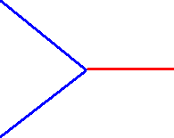
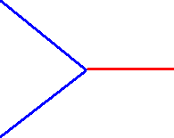

- Pen->Color
- farba čiary. Ako určujeme farbu je popísané v kap. Začíname/Farby
- Pen->Width
- hrúbka čiary. Ak chceme prerušované čiary musíme dať hrúbku 1, čo je najtenšia čiara.
- Pen->Style
- zvolíme tvar čiary (len pre hrúbku 1)
- psSolid - plná čiara.
- psDash - čiarkovaná.
- psDot - bodkovaná.
- psDashDot - bodko-čiarkovana.
- psDashDotDot - bodko-bodko-čiarkovana.
- psClear - žiadna čiara.
- Pen->Mode
- zvolíme spôsob položenia čiary na plochu. Implicitne je pmCopy - zvolenou farbou namaľuje.
Používame napr. pri "jednoduchej" animácii, čiaru položíme v režime not (alebo xor), kedy
opätovné kreslenie čiary čiaru zotrie ako undo.
- pmBlack Always black
- pmWhite Always white
- pmNop Unchanged
- pmNot Inverse of canvas background color
- pmCopy Pen color specified in Color property
- pmNotCopy Inverse of pen color
- pmMergePenNot Combination of pen color and inverse of canvas background
- pmMaskPenNot Combination of colors common to both pen and inverse of canvas background.
- pmMergeNotPen Combination of canvas background color and inverse of pen color
- pmMaskNotPen Combination of colors common to both canvas background and inverse of pen
- pmMerge Combination of pen color and canvas background color
- pmNotMerge Inverse of pmMerge: combination of pen color and canvas background color
- pmMask Combination of colors common to both pen and canvas background
- pmNotMask Inverse of pmMask: combination of colors common to both pen and canvas background
- pmXor Combination of colors in either pen or canvas background, but not both
- pmNotXor Inverse of pmXor: combination of colors in either pen or canvas background, but not both
- LineTo(x1,y1) - spojí aktuálny bod s uvedeným predvolenou čiarou (implicitne tenká súvislá čierna). Tvar čiary určíme pomocou Pen.Color, Pen.Width, Pen.Style.
- MoveTo(x1,y1) - presunie kurzor bez kreslenia na novú pozíciu.
- Polyline() - na kreslenie lomenej čiary, údaje sú brané z pola - pozri help
- Rectangle(x1,y1,x2,y2) - orámuje obdĺžnik predpísanou čiarou
- RoundRect(X1, Y1, X2, Y2, X3, Y3) - nakreslí obdĺžnik so zaoblenými rohmi
x3 - šírka elipsy
y3 - výška elipsy
Image1->Canvas->Brush.style = BsClear;
ak chceme opätovne zapnúť vykreslovanie plochy (napríklad chceme zotrieť Image1) vložíme
Image1->Canvas->Brush->style = BsSolid;
|
| 1. Vytvor nasledovné obrázky

 

|
| 2. Naprogramuj
kreslenie myšou animácia - stiahnuť hra s farbami - stiahnuť |
Image1->Cancas->Brush->Style = bsClear;
- Ellipse(x1,y1,x2,y2)
- - vykreslí kruh (kružnicu) alebo elipsu
- Arc(x1,y1,x2,y2,x3,y3,x4,y4)
- - vykreslí časť kružnice- elipsy
x1,y1,x2,y2 - súradnice rámika pre elipsu
x3,y3 - priesečníkom polpriamky stredu elipsy a [x3,z3] s elipsou získame štartový bod
x4,y4 - priesečníkom polpriamky stredu elipsy a [x4,z4] s elipsou získame koncový bod
(tento príkaz nekreslí plochu) - Arc(X, Y, W, H, Angle, AngleLength)
-
x,y - súradnice ľavého horného bodu rámika
w,h - rozmery rámika
Angle, AngleLength - štartový a koncový uhol - v 1/16 stupňa - Chord(x1,y1,x2,y2,x3,y3,x4,y4)
- - vykreslí časť kružnice- elipsy a spojí úsečkou
x1,y1,x2,y2 - súradnice rámika pre elipsu
x3,y3 - priesečníkom polpriamky stredu elipsy a [x3,z3] s elipsou získame štartový bod
x4,y4 - priesečníkom polpriamky stredu elipsy a [x4,z4] s elipsou získame koncový bod - Chord(X, Y, W, H, Angle, AngleLength)
- Pie(x1,y1,x2,y2,x3,y3,x4,y4)
- - vykreslí výsek kružnice- elipsy a spojí úsečkou
x1,y1,x2,y2 - súradnice rámika pre elipsu
x3,y3 - priesečníkom polpriamky stredu elipsy a [x3,z3] s elipsou získame štartový bod
x4,y4 - priesečníkom polpriamky stredu elipsy a [x4,z4] s elipsou získame koncový bod - Pie(X, Y, W, H, Angle, AngleLength)
- Bitmap
- - na vloženie obrázka do pozadia (bude prisť neskôr)
- Color
- - farba výplne, máme k dispozícii tie iste možnosti ako pri čiarach
- Style
- bsSolid-plné, bsCross-šachovnicovo, bsClear-žiadne, bsDiagCross-šikmá šachovnica, bsBDiagonal-šikmo/, bsFDiagonal-šikmo\, bsHorizontal-vodorovne, bsVertical-zvislo, bsDense1, bsDense2, bsDense3, bsDense4, bsDense5, bsDense6, bsDense7-šeď